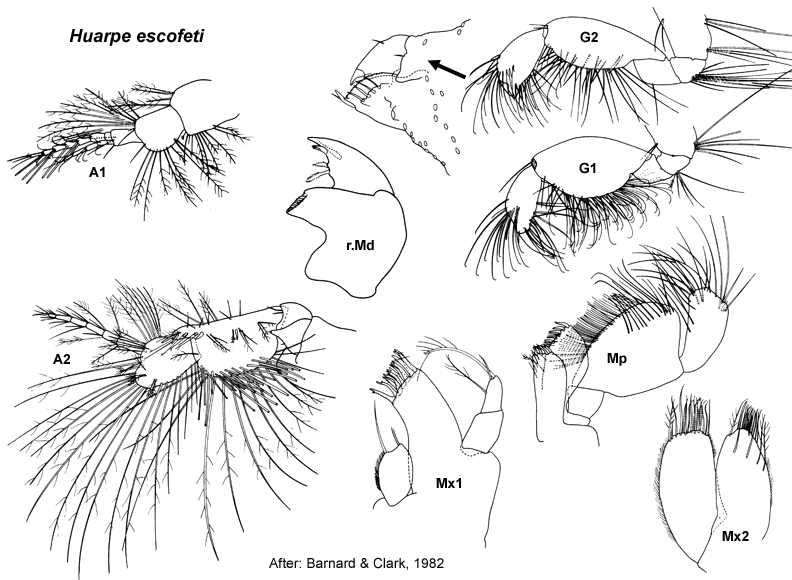

Huarpe Barnard & Clark, 1982
Huarpe Barnard & Clark, 1982: 282.
Type Species. Huarpe escofeti Barnard & Clark, 1982, by monotypy.
Description. Pereopod 3 coxa smaller than coxa 4. Pereopod 5 dactylus without robust setae. Pereopod 7 coxa without long posterior spine; basis fully expanded.
Uropod 1 inner ramus not fused to peduncle. Uropod 2 inner ramus not fused to peduncle. Telson strongly cleft.

___________________________
This
publication should be cited as: Kilgallen, N.M. & Lowry, J.K. 2008.
Urohaustoriidae (Amphipoda): World Genera and Species. Version 1. 1
January 2008. https://crustacea.net.